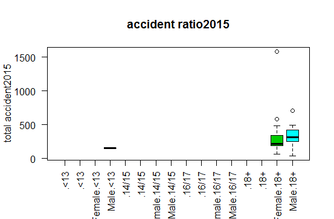
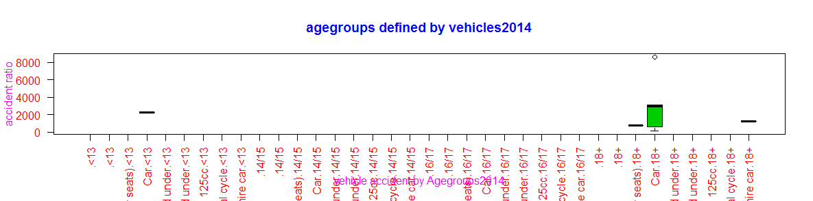
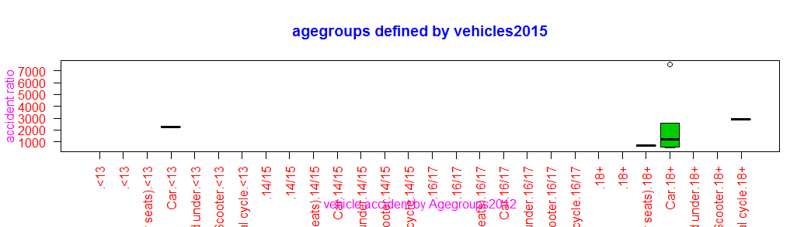
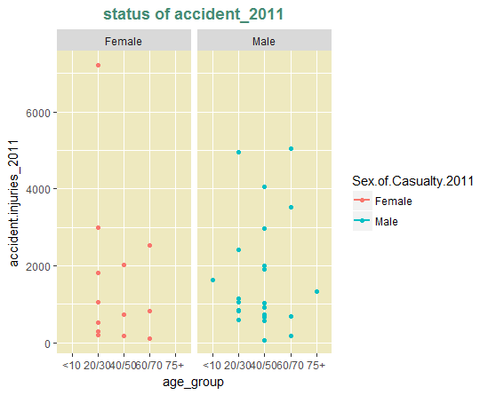

First Report
Second Report
Thired Report
Fourth Report
Fifth Report
Sixth Report
It shows status of accident among different age groups of female and male members. In female group, between below 18 age group have minimum number of accidents (<18). Between above 18 age group have highest number of accidents (>18). In male group members, the below>13 age groups have minor accidents.
It shows status of accident among different age groups of female and male members. In female group, between below 18 age group have highest number of accidents (>18). Between above 18 age group have minimum number of accidents (<18). In female group members, the below>13 age groups have minor accidents.
It shows status of accident among different age groups of female and male members. In male group, between above 18 age group have highest number of accidents (18<). In female group, between below18 age group have minimum number of accidents (>18). In male group members, the below<13 age groups have minor accidents.
It shows status of accident among different age groups of female and male members. In female group, between above 18 age group have highest number of accidents (>18).in male group, between below 18 age group have minimum number of accidents (<18). In female group members, the above<13 age groups have minor accidents.

It shows status of accident among different age groups of female and male members. In female group, between below 18 age group have minimum number of accidents (<18). In male group, between above 18 age group have highest number of accidents (>18). In male group members, the below>13 age groups have minor accidents.
Chart describes status of different type of vehicle accident among female and male members. In male group,have more accidents in a vehicle of car. In female group members, between major accidents in a vehicle of car, and in male group have minimum number of accident in a pedal cycle.
Chart describes status of different type of vehicle accident among female and male members. In female group,have more accidents in a vehicle of car. In male group members, between major accidents in a vehicle of car, and in male group have minimum number of accident in a pedal cycle, motor cycle500cc, mototr cycle 50cc and up to 125cc.
Chart describes causes of different type of vehicle accident among female and male members. In male group,have more accidents in a vehicle of car. In female group members, between major accidents in a vehicle of car, and in male group have minimum number of accident in a pedal cycle,Bus or coach(17 more passenger seat),m/cycle 50cc and under.
Chart describes causes of different type of vehicle accident among female and male members. In female group,have more accidents in a vehicle of car. In male group members, between major accidents in a vehicle of car, and in male and female group have minimum number of accident in a pedal cycle, taxi/private hire car.
Chart describes causes of different type of vehicle accident among female and male members. In female group, have more accidents in a vehicle of car. In male group members, between major accidents in a vehicle of car, and in male and female group have minimum number of accident in a pedal cycle, taxi/private hire car, motorcycle over 125cc and up to 500cc.in male group have minimum number of accident vehicle of taxi/private hire care.
shows the visual report describes status of accident among different type of vehicles among different age groups members.in above 18 age group have more accidents (18+) in a vehicle of car. Between (>18)age group have major accidents In pedal cycle members, and between (>18) age groups have medium accident in vehicle of taxi/private hire car.between (<13)age group accidents have car.
shows the visual report describes status of accident among different type of vehicles among different age groups members.in above 18 age group have more accidents (18+) in a vehicle of car. Between (>18) age group have major accidents in pedal cycle members, and between (<13) age groups have medium accident in a car.
shows the visual report describes status of accident among different type of vehicles among different age groups members.in above 18 age group have more accidents (18+) in a vehicle of car. Between (>18)age group have major accidents In pedal cycle members, between (<18) age groups have medium accident vehicle Bus or coach (17 or more passenger seats) . And between (<13)age group have accident in car.

shows the visual report describes status of accident among different type of vehicles among different age groups members.in above 18 age group have more accidents (18+) in a vehicle of car. Between (18+)age group have major accidents In pedal cycle members, between (<18) age groups have medium accident vehicle Bus or coach (17 or more passenger seats) . And between (<13)age group have accident in car.

shows the visual report describes status of accident among different type of vehicles among different age groups members.in above 18 age group have more accidents (18+) in a vehicle of car. Between (18+)age group have major accidents In pedal cycle and M/cycle 50cc and under the members, between (<18) age groups have medium accident vehicle of taxi/private hire car . And between (<13) age group have accident in car.
shows the visual report of total number of accident deaths happened in various cities over all India in the year 2011. It describes the highest number of accident deaths happened in Delhi (>2000). Medium number of accident deaths happened in Bangaluru(>600). Minimum number of accident deaths happened in Dhanbad, Kannur and Pune (<100).
shows the visual report of total number of accident deaths happened in various cities over all India in the year 2012. It describes the highest number of accident deaths happened in Delhi (>500). Medium number of accident deaths happened in Bangaluru(>600). Minimum number of accident deaths happened in Dhanbad,Kannur(<50).
shows the visual report of total number of accident deaths happened in various cities over all India in the year 2013. It describes the highest number of accident deaths happened in Mumbai (>20000). Medium number of accident deaths happened in Delhi(>5000). Minimum number of accident deaths happened in Jamshedpur, Jodhpur ,Kannur and Varanasi(>100).
shows the visual report of total number of accident deaths happened in various cities over all India in the year 2014. It describes the highest number of accident deaths happened in Mumbai (>25000). Medium number of accident deaths happened in Delhi(>5000). Minimum number of accident deaths happened in Asansoi - Durgapur, Dhanbad , Jamshedpur, Jodhpur ,Kannur and Varanasi(>100).
shows the visual report of total number of accident deaths happened in various cities over all India in the year 2015. It describes the highest number of accident deaths happened in Mumbai (>25000). Medium number of accident deaths happened in Delhi(>5000). Minimum number of accident deaths happened in Asansoi - Durgapur, Dhanbad , Jamshedpur, Jodhpur ,Kannur and Varanasi(>100).
shows major injuries ,scatter-chart2 shows minor injuries and sctter-chart3 shows non-injuries happened among various cities in India on 2014 respectively. In Chart1 Kota and Mumbai cities have more number of injuries. In Chart2 Gwalior and Kannur cities have more number of Minor Injuries. In Chart3 Mumbai and Surat cities have more number of minor injuries.
shows major injuries ,scatter-chart2 shows minor injuries and sctter-chart3 shows non-injuries happened among various cities in India on 2015 respectively. In Chart1 Kota and Mumbai have more number of major injuries. In Chart2 Gwalior and Kannur cities have more number of Minor Injuries. In Chart3 Mumbai and Surat cities have more number of non- injuries.

Chart describes the status of accident among different age groups of female and male members. In female group, between 20-30 age group have more injuries (>6000). Between 60-70 age group have medium injuries. In male group members, the below<10 and between 60-70 age groups have major injuries (>4000), between 40-50 age group have minimum injuries.
Chart describes the status of accident among different age groups of female and male members. In female group, between 20-30 age group have more injuries (>6000). Between 60-70 age group have medium injuries. In male group members, the below<10 and between 40-5- age groups have major injuries (>4000), between 60-70 age group have minimum injuries.
Chart describes status of accident among different age groups of female and male members. In female group, between 60-70 age group have more injuries (>4000). Between 20-30 age group have medium injuries. In male group members, the below (<10) age groups have major injuries (>6000), between 40-50 age group have minimum injuries.
Chart describes status of accident among different age groups of female and male members. In female group, between 20-30 age group have more injuries (>4000). Between 60-70 age group have medium injuries. In male group members, between 20-30 age groups have major injuries (>8000), between 40-50 age group have minimum injuries.
Chart describes status of accident among different age groups of female and male members. In female group, between 60-70 age group have more injuries (>8000). Between 20-30 age group have medium injuries. In male group members, between 60-70 age group have major injuries (>4000), between 20-30 age group have minimum injuries.